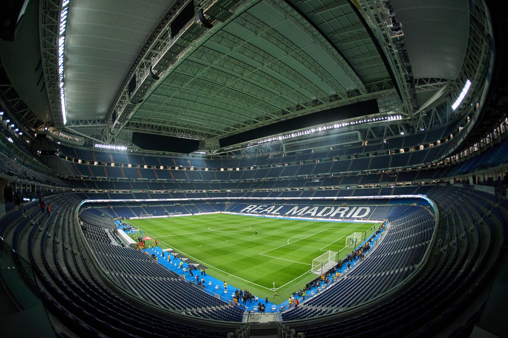

Activities
Here are the main activities during the trip to the Real Madrid
-
Meeting at Cairo International Airport
- Arrive at Terminal 3 Departure Hall
- Check-in for the flight to Madrid
- Receive boarding passes and trip documents
- Group briefing and boarding
-
Arrival in Madrid and Transfer to Stadium
- Land at Madrid-Barajas Airport
- Group transfer by private bus to Santiago Bernabéu Stadium
- Quick refreshment stop (optional)
-
Panoramic Stadium View:
- Enjoy a wide-angle view of the pitch from the highest stands.
-
Visit the Trophy Room:
-
Explore the club’s collection of trophies and historic awards.
-
Tour the Dressing Rooms:
- See where players prepare before matches.
-
Walk Through the Player Tunnel:
- Experience the route players take to the field.
-
Sit in the Dugout: Feel what it’s like to be on the sidelines during a
game.
- Feel what it’s like to be on the sidelines during a game.
-
Explore the Interactive Museum:
-
Learn about Real Madrid’s history with videos, memorabilia, and
exhibits
-
Shop at the Official Store: Buy official merchandise and souvenirs.
- Buy official merchandise and souvenirs.
-
Photo Opportunities:
- Take pictures throughout the stadium and museum areas.
Photo Opportunities
Take memorable photos around the stadium, in the dressing rooms, and
beside the pitch. Plus, enjoy a special moment where you can meet and take
pictures with life-size models or interactive displays of Real Madrid
stars like Luka Modrić and Jude Bellingham — perfect for fans who want a
personal souvenir with their favorite players!
Strict Laws and Rules for the Trip
Visitors must respect all stadium rules during the tour. Running,
shouting, or touching restricted areas is not allowed. Flash photography
may be limited in some sections. Follow the instructions of the stadium
staff at all times. Any damage to property or disruptive behavior may lead
to immediate removal from the stadium without a refund.
Know More About Club's History